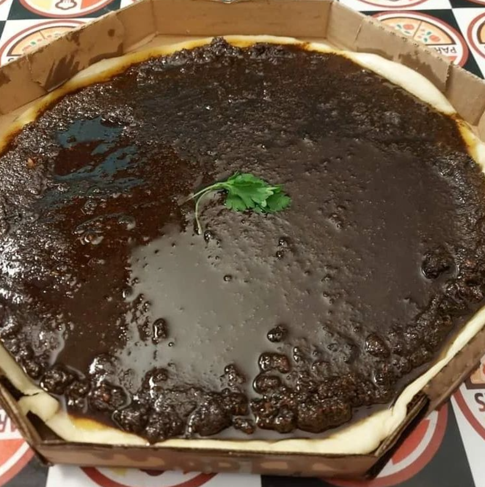

Nosso História: Do Pará para Bangu, com Sabor e Suor
O Pará Lanches nasceu de uma história de coragem, sonhos e... muitas risadas. Tudo começou quando ParáLanchesMan, um apaixonado pela culinária paraense, decidiu deixar sua terra natal, o Pará, e se aventurar no Rio de Janeiro em busca de uma vida melhor. A jornada não foi fácil. Ele chegou em Bangu com pouco no bolso, mas com uma bagagem cheia de receitas incríveis e o desejo de compartilhar os sabores únicos de sua terra com o mundo.
Do Tacacá ao Fandangos: Superando Desafios
No início, as coisas eram complicadas. ParáLanchesMan começou vendendo tacacá na esquina da Rua Paulo da Silva, com uma barraca improvisada e um sorriso no rosto. O sucesso demorou a chegar, mas ele persistiu. Entre caldos de jambu e coxinhas de camarão, ele conquistou os moradores de Bangu, que se apaixonaram por sua comida e carisma.
Em meio às dificuldades, ParáLanchesMan decidiu inovar e criou dois pratos exóticos que se tornaram verdadeiros ícones do Pará Lanches:
- Pizza de Fandangos: Uma combinação inusitada que misturava o crocante do famoso salgadinho com uma base de queijo e tucupi. Um sucesso instantâneo!
- Pizza Doce de Xorume: Apesar do nome controverso (e meio duvidoso), essa delícia surpreendeu a todos com sua mistura de chocolate, castanha-do-pará e frutas regionais.
O Crescimento e os Prêmios
A partir daí, o Pará Lanches cresceu. ParáLanchesMan conseguiu abrir sua primeira loja, com mesas e cadeiras de plástico (porque todo clássico merece um começo humilde). Hoje, já são três unidades espalhadas pelo Rio, e o restaurante é ponto obrigatório para quem quer provar os sabores do Pará.
Ao longo do caminho, o Pará Lanches recebeu prêmios como:
- Melhor Lanchonete de Bangu (2022), por sua inovação no cardápio.
- Prêmio Curiosidade Gastronômica, pela inigualável Pizza de Fandangos.
- Medalha de Honra ao Mérito Culinário (ok, essa foi inventada pelo próprio ParáLanchesMan, mas ninguém discorda que ele merece).
Propósito e Visão
O propósito do Pará Lanches vai além de alimentar: é sobre unir pessoas, celebrar a diversidade cultural e espalhar o sabor do Pará para o mundo. ParáLanchesMan acredita que a comida é um portal para memórias e experiências inesquecíveis.
A visão é clara: ser reconhecido como o maior embaixador da culinária paraense fora do estado, sempre com aquele toque de humor e autenticidade que conquistaram os clientes.
Venha Fazer Parte Dessa História!
Seja para comer um prato típico ou se aventurar nos sabores exóticos (afinal, quem resiste à Pizza de Xorume?), o Pará Lanches está de braços abertos para te receber. Aqui, cada garfada é um pedaço da história do Raimundo, uma pitada do Pará e uma explosão de sabor.
Pará Lanches: onde o Pará e Bangu se encontram no prato e no coração!

O ParáLanchesMan em pessoa
Nossa famosa pizza de xorume
Primeira lanchonete do Pará Lanches